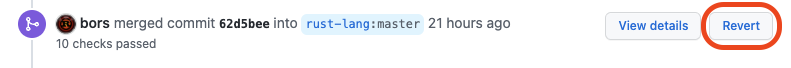

Review Policy
This document describes our review policy for contributions to the Rust compiler. Its intended audience are contributors and reviewers as well.
The purpose of this policy is to help contributors shape pull requests that are easier to review - by clarifying the Rust project expectations - and for reviewers as well - by having a handy list of common things to check. The project will benefit if both parties have clear how to work together.
It is the purpose of code reviews to:
- Reduce the risk of introducing bugs and usability and performance regressions.
- Keep our code maintainable: readable, documented and well-tested.
- Ensure that changes are made with the big picture and appropriate context in mind. This is particularly relevant for changes that seem harmless in isolation but are problematic or undesirable in the larger context.
Reviewing accomplishes this by bringing in another set of eyes to look at a proposed change from a different perspective, which increases the chance of catching mistakes early and uncovering potential blind spots in the reasoning behind the change.
Basic Reviewing Requirements
There are a number of requirements that need to be met in order for reviewing to be effective:
- Reviewers must have a sufficient understanding of the code under review.
- This is important to help spot non-obvious, unintentional side effects of a given change.
- Pull request authors must provide:
- A concise high-level description of the change and (2) the rationale behind it, unless the change is extremely trivial, like typo fixes.
- For the rationale to be even more useful, authors are encouraged to list potential points of contention, compromises that needed to be made, alternative approaches that have been considered, relevant documentation, discussions and context, etc.
- Reviewing code is difficult, and reviewers only have a limited amount of time to do it. Jump-starting the review process by not making the reviewer puzzle together the intention and context of a pull request will not only speed things up but also improve the quality of the review.
- Reviewers must have a good idea on whether they are the right person to approve the change.
- Knowledge of the code under review is an obvious but not the only criteria for answering this question.
- Procedure wise, the reviewer also needs to decide:
- Can the reviewer make the decision alone?
- Does the PR need to go through an approval process?
- Does the PR need reviews and/or sign-off from other teams, particularly
t-lang? - Can the changes break stable code or begin accepting new code that we do not intend to? If the PR contains risks, is it sufficiently justified? Does the changes need ecosystem impact evaluation through crater runs?
- Will the PR introduce significant perf changes? If there might be a perf regression, is it justified? Does the PR need a perf run?
- Can the reviewer perform the review sufficiently thorough and in a timely fashion?
- Is the reviewer impartial enough to provide a sufficiently unbiased perspective? e.g. due to co-authorship (sufficiently significant changes to the PR made by the reviewer) or other conflicts-of-interest?
Reviewing Checklist
The following list of questions will help reviewers and PR authors alike to bring PRs into good shape and meet the above criteria:
Checklist for PR authors and reviewers
- Does the PR message have..
- ..a concise high-level description of the changes? (what is being changed)
- ..a clear rationale for doing them? (why is it being changed)
- ..if non-trivial and if suitable, how the bug is fixed or how the change is implemented?
- ..a list of potential points of contention? alternatives? trade-offs? risks?
- .links to relevant issues, RFCs, MCPs, etc?
- Does the PR need a regression test? Does the PR have sufficient test coverage?
- Does the change need to be covered by a major change proposal ([MCP])? Is it already covered? If there is already a MCP open, was it already accepted, or is the PR blocked on that?
- Does the PR need a perf run?
- Does the PR need reviews and/or sign-offs from other teams?
- e.g.
t-langfor lint expansions if the ecosystem impact is large or language changes- Does the PR affect other teams in a non-trivial way? Should the affected teams get a heads-up?
- e.g. changes to rustfmt or rust-analyzer or subtrees.
- Would someone trying to understand the PR in a year’s time be able to quickly reconstruct what’s going on?
- Is the new code properly documented? Is existing documentation still up-to-date?
- Does the changes in the PR need updates to the Reference or Edition Guide?
- Does the PR introduce a regression of any of the following:
- Error message quality
- Maintainability (e.g. complex code, no documentation, unsafe)
- Any specific target platforms
- Downstream tooling (e.g. linkers, debuggers)
- Compile times
- Memory usage
- Targets (e.g. baselines, target features, calling conventions, etc.)
Checklist for reviewers
- Am I the right person to review this PR:
- Does the changes in this PR fall under
t-compilerpurview?- Do I understand the code well enough?
- Would I be able to spot non-obvious side effects?
- Would I be able to fix a bug introduced by this PR?
- Can I do the review in a timely fashion?
- Do I feel pressure to quickly approve the PR for some reason?
- Am I impartial enough?
- Before merging:
- Is the PR title and description still accurate?
- Is the commit history clean enough? We do not need 16 “fix typo” commits in the PR history.
- Does the PR correctly/incorrectly close relevant issues?
- Do I need to roll reviewers from other relevant teams?
Guidance for dealing with common situations
In most cases common sense is enough for deciding how to apply this policy. However, sometimes there are gray areas where it is not immediately clear how to proceed. This section lists a few common cases together with guidance on how to deal with them.
I don’t think I am a good fit for reviewing - what now?
It is completely normal that you get (randomly) assigned a PR (via rustbot or otherwise) but don’t feel comfortable reviewing it. Here is what you can do, depending on the concrete case:
- If the change seems really big or contentious, consider recommending the author go through the appropriate approval process.
- If you know just the right person for the review, assign them via
r? @<github-name>. It’s polite to leave a comment asking them if they can take over – but you don’t have to make sure beforehand that they can actually do it. - If the change is not too complicated and you don’t expect that another randomly rolled compiler
reviewer will also have trouble with the PR, you can reroll a random compiler reviewer with
r? compiler. - If the change is complicated, or you expect randomly rolling another compiler reviewer will just
lead to multiple rerolls, you should open a thread in
#t-compiler/privateto ask the rest of the team – for someone who might be able to review it, or even if the team is comfortable with accepting the change at all. - If the change is intended for another team, roll a reviewer from the relevant team (example:
r? compiler).
You can also always ask for help on the #t-compiler Zulip stream for finding a reviewer. It is
recommended, to the extent you are comfortable with, to do an initial review before passing the PR
on to the final reviewer. This way the PR author will get helpful feedback sooner, subsequent
reviewers will have less work to do, and you might also improve your own understanding of diverse
areas in the compiler.
It is unclear if a contribution requires an approval decision
If you think a might contribution require broader team approval, check the Proposals, Approvals
and Stabilization documentation. If a contribution doesn’t
match any of the examples in that documentation, open a thread in #t-compiler/private and ask.
Discussion or rationale is too intransparent
Sometimes there are PRs that seem to be the result of some prior discussion, with no description or rationale. They usually have a title like “Change X” and the only content of the PR message is “r? @xyz”. Even though the change might make sense and may even have been suggested by a compiler team member, this is not good form.
Contributors may stumble across the PR several year later during bisections only to find the PR with absolutely zero context that was discussed offline or elsewhere, and the information is not available to future contributors. This is not good for maintainability. Including relevant context will very often help the PR author themselves in the future!
The PR message should give a self-contained description of what is being changed, why it is being changed and anything else that might be of interest.
Try to put yourself in the shoes of someone who, a few years down the road, needs to fix a bug related to the code touched by the PR and needs to reconstruct the rationale for the way things are.
Reviewer and PR author report to the same entity / work for the same employer
There is no rule that prevents two employees of the same company from reviewing each other’s PRs. We assume compiler team reviewers to act in good faith, and vest trust in team members to do so.
The concerns in such a case are no different than for any other two reviewers. We expect the mechanisms and principles we articulated above to be respected by all reviewers, whatever their employer. Does the PR concisely describe the changes that are being made? Does it give a clear, transparent rationale for why the changes make sense so that contributors down the line can follow the reasoning and reconstruct what’s going on? Have points of contention been discussed and cleared up? Then you are in the clear.
If you are in doubt if something is contentious, give a heads up to @rust-lang/compiler and ask
for another opinion. If you think a might contribution require broader team approval, check
the Proposals, Approvals and Stabilization documentation.
Reviewing and Mentoring
In the course of mentoring someone through a PR it often happens that the reviewer has ended up effectively co-writing the changes. This can be a tricky case because the reviewer is effectively approving their own changes. There are a number of considerations to take into account when deciding how to proceed:
- If the general direction of the changes has already been approved as part of an approval decision and the concrete advice given during mentoring was only concerned with resolving minor technical issues, then no further review is required.
- Similarly, if any contentious decisions have visibly been discussed and resolved on the PR with other compiler team members and the rest of the changes don’t deviate from the general direction that has been agreed upon then no further review is required either.
- If the PR was opened as a response to a concrete suggestion by the reviewer (and the changes are not entirely trivial) then it is advisable that the final review is done by someone else. However, the initial reviewer/mentor is encouraged to help bring the PR into good shape before handing it off.
In general, it is advisable to ask for a second opinion by someone knowledgable in the field in such cases, just to increase the chance of uncovering oversights and blindspots a mentor might have.
Nobody understands the code that’s being changed
Sometimes there is a bug in some code that nobody understands anymore. The original authors are
unavailable and it is hard to gauge the implications of a proposed fix. In such a case it is a good
idea for reviewers to I-compiler-nominated the PR (if they intend to stay the main reviewer) or
assign a compiler team lead to the issue and add the S-waiting-on-team label.
In both cases, the PR will be brought in the weekly triage meeting. It is also especially valuable to gather and document as much information as possible about the issue, such as a description of the problem being fixed, points of unclarity, potential risks, alternatives that have been considered, et cetera. It is also a good idea to open a tracking issue to document the lack of understanding of such area, to document the specific questions, concerns and bugs, and it can be resolved if compiler team members regain better understanding.
Reviewers should ask PR authors to add this kind of information as comments in the code and/or to the PR message (which will become part of the git commit history).
PR makes a change to support use of rustc internals for external projects
This will need to be determined on a case-by-case basis.
In general, we should allow changes making things public, cleaning up things or making them more general, as long as the owners of the compiler region agree (so just assign to them).
As a concrete example: if someone is using the mir interpreter, and they want to make something public, it is likely not a problem, but there are some functions that are module- or crate-private on purpose, as they uphold invariants within the MIR interpreter. So basically, just assign such PRs to the relevant people (usually they get pinged anyway due to having told rustbot that they want to get pinged on changes to these parts).
Require a doc comment on such APIs identifying which external consumers the API concerns, and for what kinds of purpose.
If you think a might contribution require broader team approval, check the Proposals, Approvals and Stabilization documentation.
Note that this can non-obviously bound supposedly-internal compiler APIs to external consumers.
Convey to the external consumers (that are not rust-lang/ projects) that we can offer the
convenience so as long as it does not impose significant maintenance burden on the compiler, e.g.
gets in the way of refactorings, and no hard stability guarantees are promised.
The PR is very large and complicated
Reviewers are not expected to stomach PRs that are very large and complicated. It is expected from contributors to split their work to make a review feasable, for example a series of more digestible PRs which are individually more logically self-contained. In general, before submitting large impact changes, it is expected the contributor to have discussed the design previously with the relevant team(s) so it is contributor’s duty to reference such discussions.
When in doubt, bring the PR to the attention of the team (through zulip threads and/or nominate for compiler triage meeting), and the team can decide if:
- The team can find suitable reviewers who can aid the PR author to break up the large change into smaller logical PRs that are possible to review on their own, but also in the context of the larger change.
- The team does not have the bandwidth, or team members are is not ready or willing or able to accept the large change as-is. In such cases, the team should make a decision to postpone or close, and clearly communicate the decision to the PR author to explain the reasoning. It is very frustrating if a PR stalls for many months only for it to be rejected anyway.
Technical Aspects of Reviewing
Every PR that lands in the compiler and its associated crates must be reviewed by at least one person who is knowledgeable with the code in question.
When a PR is opened, you can request a reviewer by including r? @username in the PR description.
If you don’t do so, rustbot will automatically assign someone from the pool of reviewer candidates,
determined by the files affected.
It is common to leave a r? @username comment at some later point to request review from someone
else. This will also reassign the PR.
It is possible to request reviews from multiple reviewers, for example:
Rolling both a T-compiler and T-bootstrap reviewer as this PR contains both
compiler and bootstrap changes.
r? compiler
r? bootstrap
bors
We never merge PRs directly. Instead, we use bors. A qualified reviewer with bors privileges
(e.g., a compiler team member) will leave a comment like @bors r+. This
indicates that they approve the PR.
People with bors privileges may also leave a @bors r=username command. This indicates that the
PR was already approved by @username. This is commonly done after rebasing.
Finally, in some cases, PRs can be “delegated” by writing @bors delegate+ or
@bors delegate=username. This will allow the PR author or the delegated user to approve the PR
by issuing @bors commands like the ones above (but this privilege is limited to the single PR).
Reverts
If a merged PR is found to have caused a meaningful unanticipated regression, the best policy is to revert it quickly and re-land it later once a fix and regression test are added.
A “meaningful regression” in this case is up to the judgment of the person approving the revert.
Some criteria to consider if a revert is warranted:
- A bug in a stable or otherwise important feature that causes code to stop compiling, changes runtime behavior, or triggers a (warn-by-default or higher) lint incorrectly in real-world code. Especially if the bug is reachable without any unstable feature gates.
- If a bug or change (incl. ICEs) is particularly easy to hit.
- If a bug or change significantly degrades contributor experience.
- If a test is flaky and unreliable.
When these criteria are in doubt, and especially if real-world code is affected, revert the PR. This has three benefits:
- It allows bleeding edge users (esp. nightly or beta) to continue to use and report bugs on HEAD with a higher degree of certainty about where new bugs are introduced.
- It takes pressure off the original PR author and the team, that no one is pressured to feel like they have to fix it immediately.
- It might prevent the significant bug or regression from reaching another nightly/beta/stable build.
Before being reverted, a PR should be shown to cause a regression with a fairly high degree of certainty (e.g. bisection on commits, or bisection on nightlies with one or more compiler team members pointing to this PR, or it’s simply obvious to everyone involved). Only revert with lower certainty if the issue is particularly critical or urgent to fix.
Creating reverts
The easiest method for creating a revert is to use the “Revert” button on Github. This appears next to the “bors merged commit abcd” message on a pull request, and creates a new pull request.

Alternatively, a revert commit can be created using the git CLI and then uploaded as a pull request:
$ git revert -m 1 62d5bee
Don’t rely only on the default commit title and message created by git. Instead, title the revert commit meaningfully, and link to the relevant PR that introduced the regression. Link to the specific PR that is being fully or partially reverted. Link to relevant issues and discussions. Retain the commit hash being reverted.
Example revert commit title and message
Revert #131669 due to ICEs Revert <https://github.com/rust-lang/rust/pull/131669> due to ICE reports: - <https://github.com/rust-lang/rust/issues/134059> (real-world) - <https://github.com/rust-lang/rust/issues/134060> (fuzzing) The changes can be re-landed with those cases addressed. This reverts commit 703bb982303ecab02fec593899639b4c3faecddd, reversing changes made to f415c07494b98e4559e4b13a9c5f867b0e6b2444.
It’s polite to tag the author and reviewer of the original PR so they know what’s going on. You can use the following message template for the revert PR description:
Reverts rust-lang/rust#123456
cc @author @reviewer
This revert is based on the following report of a regression caused by this PR:
<link to issue or comment(s)>
In accordance with the compiler team [revert policy], PRs that cause meaningful
regressions should be reverted and re-landed once the regression has been fixed
(and a regression test has been added, where appropriate).
[revert policy]: https://forge.rust-lang.org/compiler/reviews.html#reverts
Fear not! Regressions happen. Please rest assured that this does not
represent a negative judgment of your contribution or ability to contribute
positively to Rust in the future. We simply want to prioritize keeping existing
use cases working, and keep the compiler more stable for everyone.
r? compiler
Please include a temporary regression test in a separate commit to check that the regression is actually addressed by the revert commit. In a reland, this temporary regression test can be adapted or removed following improved test coverage as suitable.
If you have r+ privileges, you can self-approve a revert if the revert is clean and is unlikely
to cause new regressions on its own, make sure the revert is not a case of “the cure is worse
than the poison”. If non-trivial, please wait for a review – from the original reviewer or from
another compiler reviewer via r? compiler. You can ask in #t-compiler if the matter is more
urgent.
Generally speaking, reverts should have elevated priority and match the rollup status of the PR
they are reverting. If a non-rollup PR is shown to have no impact on performance, it can be marked
rollup=always. The revert author can coordinate with contributors authoring rollups to reschedule
rollups or interleave the revert PR between rollups if suitable.
Forward fixes
Often it is tempting to address a regression by posting a follow-up PR that, rather than reverting the regressing PR, instead augments the original in small ways without reverting its changes overall. However, if real-world users have reported being affected, this practice is strongly discouraged unless one of the following is true:
- A high-confidence fix is already in the bors queue.
- The regression has made it to a release branch (beta or stable) and a backport is needed. Often
the “smallest possible change” is desired for a backport (so that the fix doesn’t introduce new
regressions). The offending PR may or may not still be reverted on the main branch; this is left
to the discretion of someone who can
r+it.
While it can feel like a significant step backward to have your PR reverted, in most cases it is much easier to reland the PR once a fix can be confirmed. Allowing a revert to land takes pressure off of you and your reviewers to act quickly and gives you time to address the issue fully. It also is an opportunity to take a step back and reassess the test coverage.
Rollups
All reviewers are strongly encouraged to explicitly mark a PR as to whether or not it should be
part of a rollup. This is usually done either when approving a PR with @bors r+ $ROLLUP_STATUS
or with @bors $ROLLUP_STATUS where $ROLLUP_STATUS is substituted with one of the following:
rollup=always: These PRs are very unlikely to break tests or have performance implications. Example scenarios:- Changes are limited to documentation, comments, etc. that is highly unlikely to fail a build.
- Changes cannot have performance implications.
- Your PR is not landing possibly-breaking or behavior altering changes.
- Feature stabilization without other changes is likely fine to rollup, though.
- When in doubt do not use this option!
rollup=maybe: This is the default if@bors r+does not specify any rollup status at all. Use this if you have some doubt that the change won’t break tests. This can be used if you aren’t sure if it should be one of the other categories. Since this is the default, there is usually no need to explicitly specify this, unless you are un-marking the rollup level from a previous command.rollup=iffy: Use this for mildly risky PRs (more risky than “maybe”). Example scenarios:- The PR is large and non-additive (note: adding 2000 lines of completely new tests is fine to rollup).
- Has platform-specific changes that are not checked by the normal PR checks.
- May be affected by MIR migrate mode.
rollup=never: This should never be included in a rollup (please include a comment explaining why you have chosen this). Example scenarios:- May have performance implications.
- May cause unclear regressions (we would likely want to bisect to this PR specifically, as it would be hard to identify as the cause from a rollup).
- Has a high chance of failure.
- Is otherwise dangerous to rollup.
- Messes too much with:
- LLVM or code generation
- bootstrap or the build system
- build-manifest
rollup: this is equivalent torollup=alwaysrollup-: this is equivalent torollup=maybe
Priority
Reviewers are encouraged to set one of the rollup statuses listed above instead of setting priority. Bors automatically sorts based on the rollup status (never is the highest priority, always is the lowest), and also by PR age. If you do change the priority, please use your best judgment to balance fairness and urgency with other PRs.
The following is some guidance for setting priorities:
- 1-5
- P-high issue fixes
- Toolstate fixes
- Reverts containing the above
- Beta-nominated PRs
- Submodule/Subtree updates
- 5+
- P-critical issue fixes
- 10+
- Bitrot-prone PRs (particularly very large ones that touch many files)
- Urgent PRs (e.g. urgent reverts)
- Beta backports
- 20+
- High priority that needs to jump ahead of any rollups
- Fixes or changes something that has a high risk of being re-broken by another PR in the queue.
- 1000
- Absolutely critical fixes
- Release promotions
Expectations for r+
bors privileges are binary: the bot doesn’t know which code you are familiar with and what code you are not. They must therefore be used with discretion. Do not r+ code that you do not know well – you can definitely review such code, but try to hand off reviewing to someone else for the final r+.
Similarly, never issue a r=username command unless that person has done the review, and the
code has not changed substantially since the review was done, and that the person has explicitly
indicated that another contributor can r= on their behalf.
Rebasing is fine and often necessary, but changes in functionality typically require re-review. It is very helpful for the reviewer if the PR author can produce a brief summary of what has changed since last review, in addition to responding to individual review comments.
Please refer to bors documentation for bot usage.
Social aspects of reviewing
First and foremost, PR authors and compiler reviews alike are expected to uphold the Code of Conduct. Simply speaking, a reviewer is expected to be respectful to the PR author, even if the reviewer disagrees with the changes.
Reviewers are encouraged to consider matters from the perspectives of the PR author too. If a change is stuck due to procedural reasons or reviewer bandwidth for months without any resolution (including a resolution that the compiler might not be ready to accept such a change at present time, but thank the PR author for the contributions anyway), and accrues constant merge conflicts, it can be very frustrating.
If some discussions are getting heated, ask the moderation team to step in.